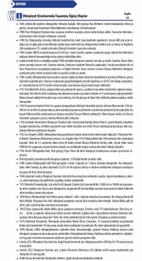

YİC1 darajasidagi turk tili o'rganuvchilar uchun tinglab tushunish matnlari to'plami.
Ushbu qo'llanma C1 darajasidagi turk tili o'rganuvchilar uchun mo'ljallangan tinglab tushunish (dinleme) matnlarini o'z ichiga oladi. Kitobda turli qiziqarli tarixiy voqealar, sport musobaqalari va madaniy mavzularga oid matnlar jamlangan. U til o'rganuvchilarning tinglash ko'nikmalarini rivojlantirishga yordam beradi.